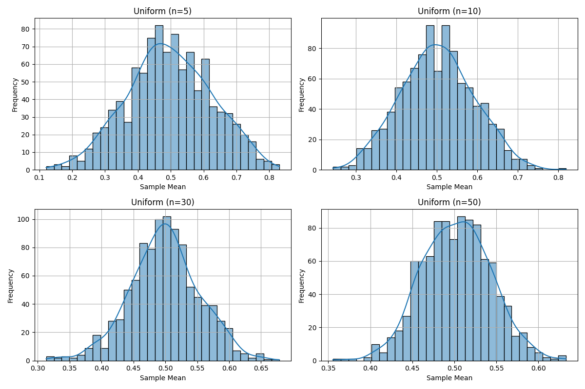
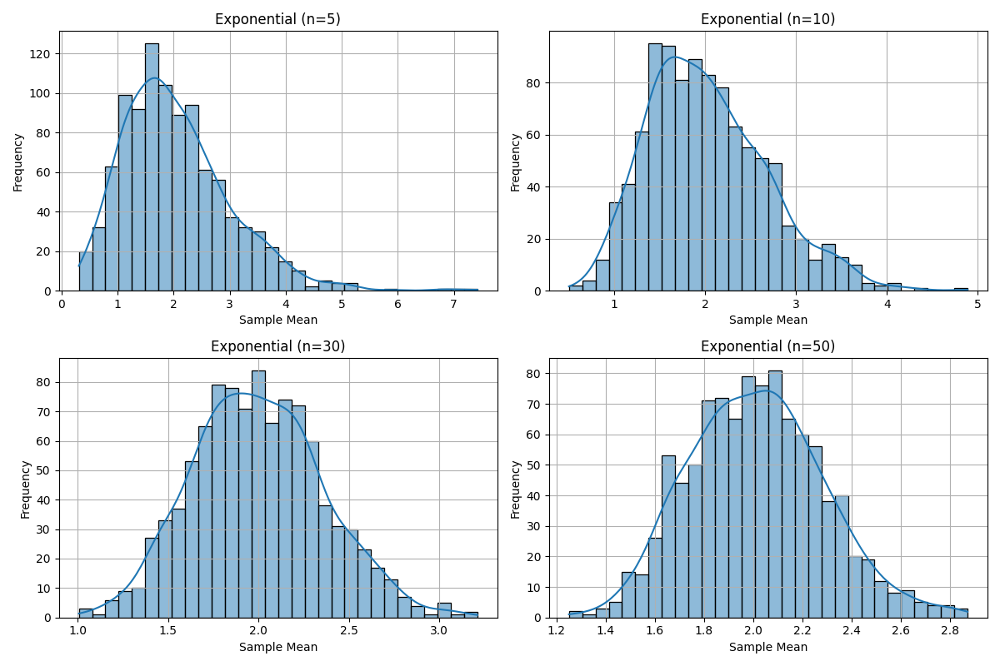
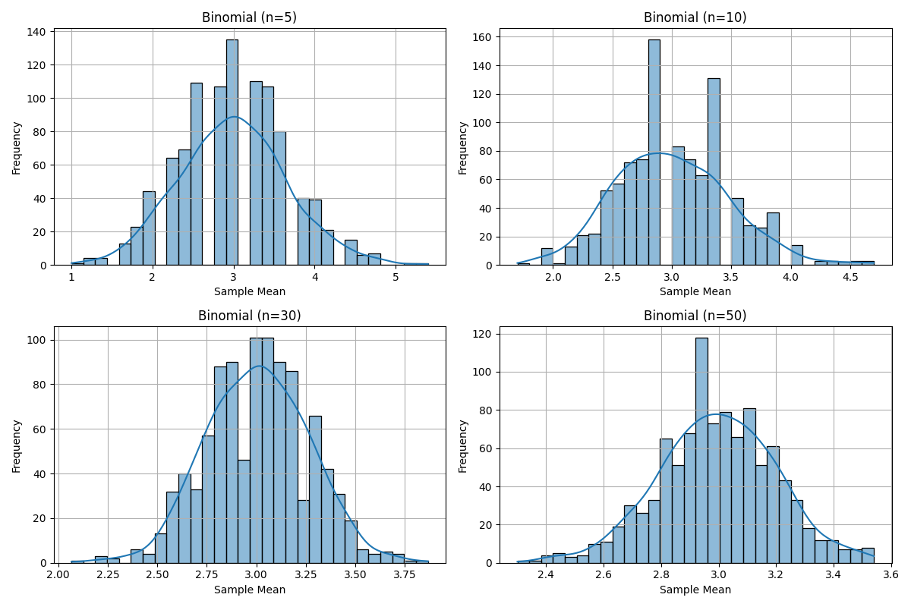

Problem 1
📊 Exploring the Central Limit Theorem Through Simulations
📌 Motivation
The Central Limit Theorem (CLT) is a cornerstone of statistics. It states that the sampling distribution of the sample mean becomes approximately normal as the sample size increases — regardless of the population’s original distribution. Simulations help visualize and understand this concept in an intuitive way.
🎯 Problem Overview
Objective
Use Python simulations to explore how sample means from various population distributions approach a normal distribution as sample size increases.
🧪 Tasks
1. Simulating Sampling Distributions
Select different population distributions to simulate:
- Uniform distribution
- Exponential distribution
- Binomial distribution
For each, generate a large dataset representing the population (e.g., 100,000 values).
2. Sampling and Visualization
- Randomly draw samples of varying sizes (e.g.,
n = 5, 10, 30, 50) from the population. - Calculate the sample mean for each draw.
- Repeat the process (e.g., 1,000 times) to build a sampling distribution.
- Plot histograms of these sample means and observe their shapes.
3. Parameter Exploration
Explore the following:
- How the original distribution’s shape affects the rate of convergence to normality.
- How sample size influences convergence.
- The effect of population variance on the spread of the sampling distribution.
4. Real-World Applications
Understand the significance of CLT in practical scenarios:
- Estimating population parameters from samples
- Quality control and process monitoring
- Financial modeling and risk assessment
🧪 Simulation Details
We simulate data from the following population distributions:
- Uniform distribution
- Exponential distribution
- Binomial distribution
For each distribution:
- A population of 100,000 values is generated
- Samples of sizes
n = 5, 10, 30, 50are drawn repeatedly (1,000 times) - Sample means are calculated and plotted as histograms
💻 Python Code
import numpy as np
import matplotlib.pyplot as plt
import seaborn as sns
def generate_population(dist, size=100_000, **kwargs):
if dist == 'uniform':
return np.random.uniform(kwargs.get('low', 0), kwargs.get('high', 1), size)
if dist == 'exponential':
return np.random.exponential(kwargs.get('scale', 1.0), size)
if dist == 'binomial':
return np.random.binomial(kwargs.get('n', 10), kwargs.get('p', 0.5), size)
raise ValueError(f"Unknown distribution: {dist}")
def sample_means(pop, sample_size, n_samples=1000):
return [np.mean(np.random.choice(pop, sample_size, replace=False)) for _ in range(n_samples)]
def plot_sampling_dists(populations, sample_sizes, n_samples=1000, bins=30):
for name, pop in populations.items():
plt.figure(figsize=(12, 8))
for i, n in enumerate(sample_sizes, 1):
means = sample_means(pop, n, n_samples)
plt.subplot(2, 2, i)
sns.histplot(means, kde=True, bins=bins)
plt.title(f"{name.title()} (n={n})")
plt.xlabel("Sample Mean")
plt.ylabel("Frequency")
plt.grid(True)
plt.tight_layout()
plt.show()
if __name__ == "__main__":
dists = {
'uniform': {'low': 0, 'high': 1},
'exponential':{'scale': 2.0},
'binomial': {'n': 10, 'p': 0.3},
}
pops = {name: generate_population(name, **params) for name, params in dists.items()}
sizes = [5, 10, 30, 50]
plot_sampling_dists(pops, sizes)
📌 Output
The script generates a set of plots for each distribution. Each plot shows how the distribution of sample means changes as the sample size increases — illustrating the Central Limit Theorem in action.


